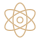

IRIS NEBULA UNA EXPLORACIÓN VISUALMATERIA DE UNA MIRADA
Una imagen.
Infinitas escalas.
Acércate. Altera. Descubre.
Arrastra para explorarMueve un dedo para explorarRueda para acercartePellizca para acercarte
Partículas + ASCII
Campo